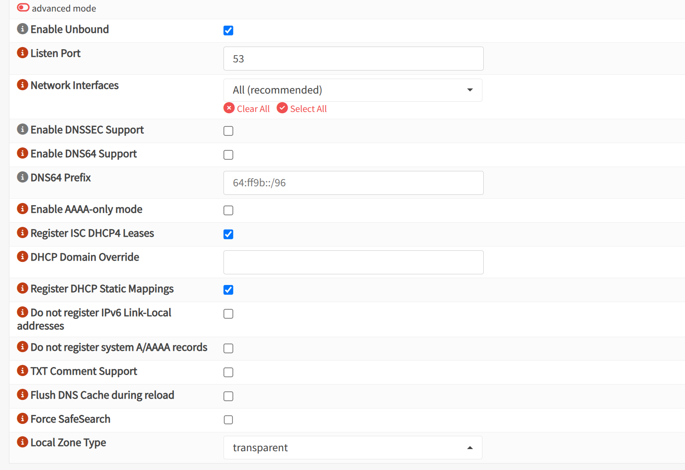

Setup iniziale
Creazione container
Per nginx è sufficiente un container, diamogli - 1 core - 1 GB RAM - 8 GB storage - ip statico
Installazione nginx proxy manager
Installare docker
apt update && apt install docker.io docker-compose -y
Creare un dockerfile con mkdir -p /opt/npm && cd /opt/npm nano docker-compose.yml
version: '3.8'
services:
app:
image: 'jc21/nginx-proxy-manager:latest'
restart: unless-stopped
ports:
- '80:80'
- '81:81'
- '443:443'
volumes:
- ./data:/data
- ./letsencrypt:/etc/letsencrypt
lanciarlo con docker-compose up -d
Modifiche alla rete per DNS
Dobbiamo istruire OPNsense a riconoscere i nomi dei dispositivi locali:
- OPNsense > Services > Unbound DNS > General > abilitiamo la registrazione DHCP

Aggiunta di alias di rete
Affinchè io possa digitare sul browser immich.lab.lan e accedere al server immich senza bisogno di ricordare ip e porta o fare affidamento alla cronologia, devo configurare OPNsense e nginx proxy manager. Abbiamo configurato il sistema per utilizzare il DNS di OPNsense anzichè quello integrato in pi-hole, quest'ultimo avrà solamente la funzione di ad-blocker. Il compito di OPNsense sarà collegare il nome di dominio al corrispondente IP+porta.
I browser tuttavia di default quando accedono ad un IP accede alla porta 80. A questo punto entra in gioco Nginx che legge la regola impostata per quell'IP, indicando la porta.
Aggiunta Unbound DNS Overrides
Andare su:
- OPNsense > Services > Unbound DNS > Overrider
- aggiungere host, dominio e ip del nostro nuovo indirizzo che il router di opnsense smisterà
Creazione record DNS
Andare su pi-hole e inserire il record DNS che gli consentirà di collegare quel nome a nginx.
Domain: x.lab.lan IP: ip di nginx
Dobbiamo fare questo passaggio poichè è Pi-hole che gestisce il DNS.
Aggiungere proxy
Andare su nginx proxy manager e aggiungere un proxy host, scrivendo
- dominio (x.lab.lan)
- indirizzo
- checkare le tre caselle (cache, protezione da exploit...)